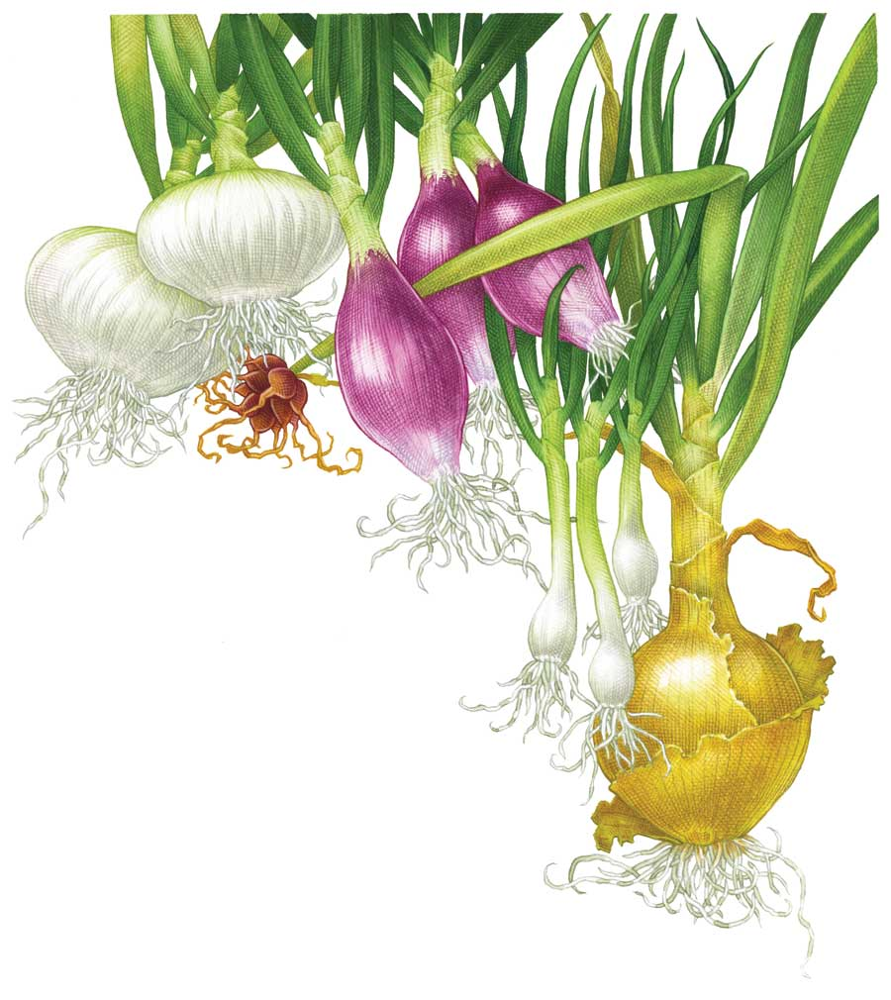
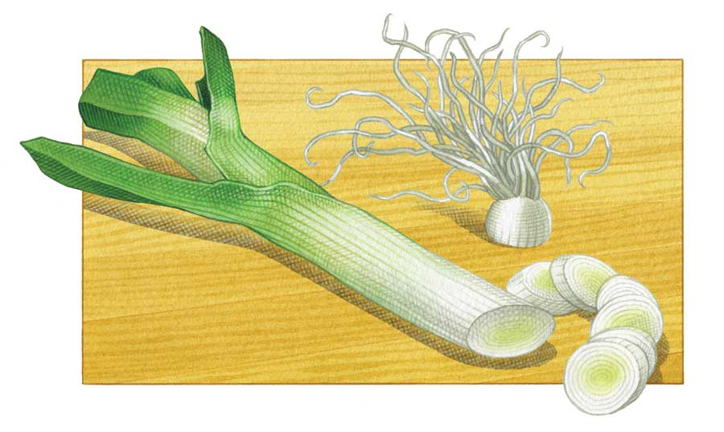

Packed with vibrant flavor, onions are a staple food throughout the world. Familiar bulb onions are easy to grow as long as you plant varieties adapted to your climate, and you can expand your onion season by growing leeks, scallions and other types of non-bulbing onions. All onions grow best in fertile, well-drained soil that’s slightly acidic (a pH between 6.0 and 6.8).
Bulb onions mature in response to changing amount of daylight. The longer the plants grow before they begin forming bulbs, the bigger and better those bulbs will be. In North America, days become shorter after the summer solstice, about June 21. Summer days are longer in the North than in the South.
Short-day varieties grow best in the South. They begin forming bulbs in late spring, so they need to be planted in fall in the far South and in late winter in colder climates in order to produce large bulbs.
Intermediate-day varieties are the best main-crop onions for the country’s midsection (Washington, D.C., to northern Arizona), and they can be grown as early onions in the North.
Long-day varieties are best grown in the North. These onions have spicy, well-rounded flavors and store well.
Check out our chart of alternative onions for information on growing leeks, scallions, shallots and other types of non-bulbing onions.
In late winter, start seeds of all types of onions - bulb onions, leeks, scallions and shallots - indoors under bright fluorescent lights. Make additional sowings until early spring. Set out bulb onion seedlings three weeks before your last frost, and set out seedlings of non-bulbing onions six weeks before your last frost.
In spring you can also plant sets, which are small, dormant onions. Small sets produce better bulbs than large sets do.
In fall, short-day varieties can be planted in many mild winter areas. Seedlings should be ready to set out in mid-October. For more details on when to plant onions in your region, visit our What to Plant Now page.
Choose a sunny site with fertile, well-drained soil, and loosen the planting bed to at least 12 inches deep. Mix in a 1-inch layer of mature compost. Make a 4-inch-deep, V-shaped furrow in the prepared bed. Fill the bottom of the furrow with 1 inch of rich compost or a light dusting of dry organic fertilizer, and then water the prepared furrow. Set out seedlings or sets 3 to 6 inches apart, depending on the plants’ mature size.
The tops of bulb onion plants fall over naturally once the bulbs have matured. When half of the tops in a planting have fallen over, lift all of the bulbs and place the pulled plants in a warm, dry place away from direct sunshine to cure.
Cure short-day onions for just a few days before clipping off roots and tops and storing the onions in the refrigerator. Cure intermediate- and long-day onions for two to three weeks. When the onions feel paper-dry on the outside, clip off tops and roots, and lightly brush off loose soil before storing the onions in a cool, dry place. Arrange them in a single layer or hang them in mesh bags. Properly cured onions will store for six to eight months in a root cellar or cool basement. Check them weekly to sniff out signs of spoilage.
Several of the alternative onions can be handled as perpetual crops by digging and dividing them, or by replanting bulbs or bulblets.
Big bulb onions are grown from seed. To grow your own from an open-pollinated variety, select three perfect onions and store them through winter. Replant them in early spring. After the plants bloom and black seeds begin to fall from the flower heads, gather the heads in a paper bag. Allow the seeds to air-dry for a few days before storing the largest seeds for up to two years.
Onion root maggots eat onion roots and bulbs. The adult flies are attracted by rotting onion tissues, so rotate onions with other crops, and compost all refuse after harvesting. Planting late can help you avoid this pest, or you can use row covers in spring, which is when the egg-laying females are most active.
Keep areas near onions mowed to reduce the weedy habitat that onion thrips prefer. Use a spinosad-based biological pesticide to control serious infestations.
Pink root and several other soilborne diseases can cause onions to rot. Use resistant varieties, and grow all onions in well-drained sites.
Choose the least weedy section of your garden for growing onions. You can start seeds early, because onion seedlings are easy to hold in containers until it’s time to plant them. Delay planting until the last cold spell has passed. Exposure to prolonged cold can cause bulb onions to bolt, and plants grown from sets are more prone to bolting than those grown from seedlings.
Does a cook ever have enough onions? Pungent bulb onions and mild leeks are best for soups, stews and other dishes that cook for a long time. Use tender young scallions when you need bright punches of raw onion flavor. Leeks are great for drying. Flawed bulb onions that are not likely to store well can be added to summer pickles.
|
 KEITH WARD The robust, exceptional flavor onions add to meals is worth the few teardrops that may end up on your cutting board. Shown here, from left to right, are ‘Bianca di Maggio,’ ‘Red Torpedo,’ scallions, and a yellow onion with its stalk buds. |
 KEITH WARD Leeks can play all sorts of scrumptious roles in the kitchen. They are great for drying, and also give tasty punch to soups, stews and other dishes that cook for a long time. |
|